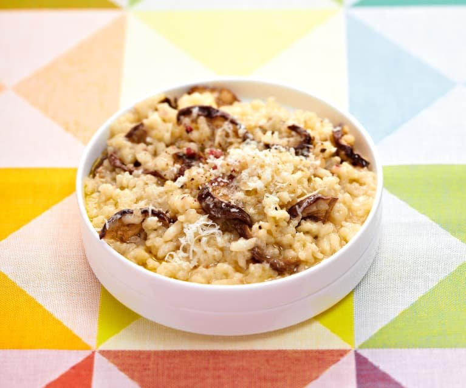

Risotto aux cèpes
Ingrédients
4×
- 65 g d'oignon
- 15 g d'huile d'olive
- 200 g de riz à risotto
- 1 cube de bouillon de légumes
- 450 g d'eau chaude
- 150 g de vin blanc
- 1 pincée de sel
- 1 pincée de poivre
- 200 g de cèpes
- 20 g de beurre
- 20 g de parmesan râpé

Préparation
Étape 1
Hacher 65 g d'oignon 5 sec/vitesse 5. Ajouter 15 g d'huile d'olive et rissoler 4 min/120ºC/vitesse 1, sans le gobelet.
Étape 2
Ajouter 200 g de riz à risotto (arborio, carnaroli) et nacrer 4 min/Varoma/sens inverse/vitesse mijotage.
Étape 3
Ajouter 1 cube de bouillon de légumes, 450 g d'eau chaude, 150 g de vin blanc, 1 pincée de sel et 1 pincée de poivre. Cuire 11 min/100ºC/sens inverse/vitesse 1.
Étape 4
Ajouter 200 g de cèpes (frais, surgelés ou 20g séchés) et cuire 7 min/100ºC/sens inverse/vitesse 1. Incorporer 20 g de beurre et 20 g de parmesan râpé à la spatule. Servir aussitôt.
Conseils
- Ajouter du jambon italien pour un plat complet.
Résumé
65 g d'oignon
15 g d'huile d'olive
Hacher 5 sec/vitesse 5 rissoler 4 min/120ºC/vitesse 1
200 g de riz à risotto
nacrer 4 min/Varoma/sens inverse/vitesse mijotage
1 cube de bouillon de légumes
450 g d'eau chaude
150 g de vin blanc
1 pincée de sel
1 pincée de poivre
Cuire 11 min/100ºC/sens inverse/vitesse 1
200 g de cèpes
20 g de beurre
20 g de parmesan râpé
cuire 7 min/100ºC/sens inverse/vitesse 1 Incorporer